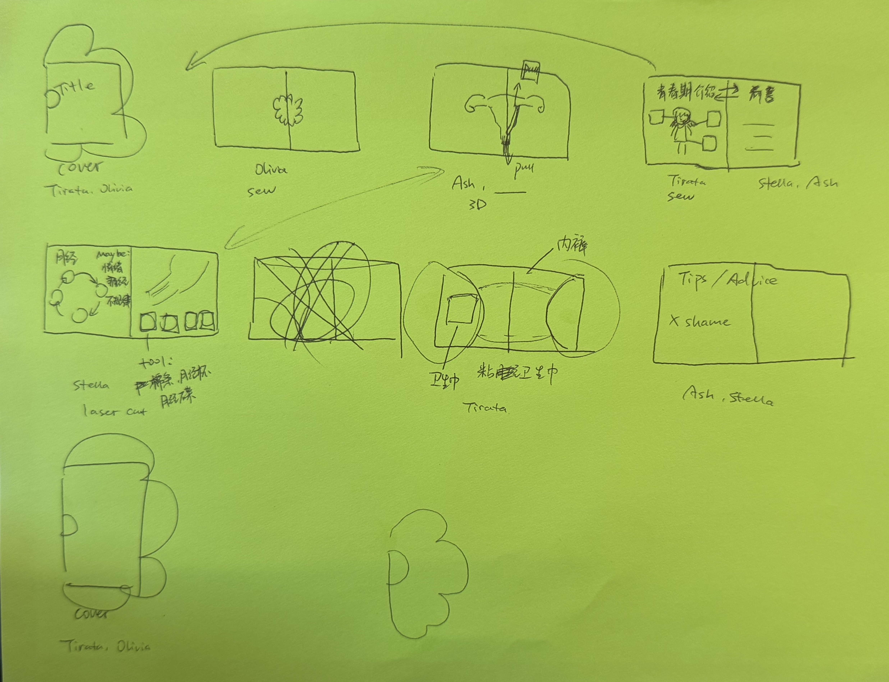
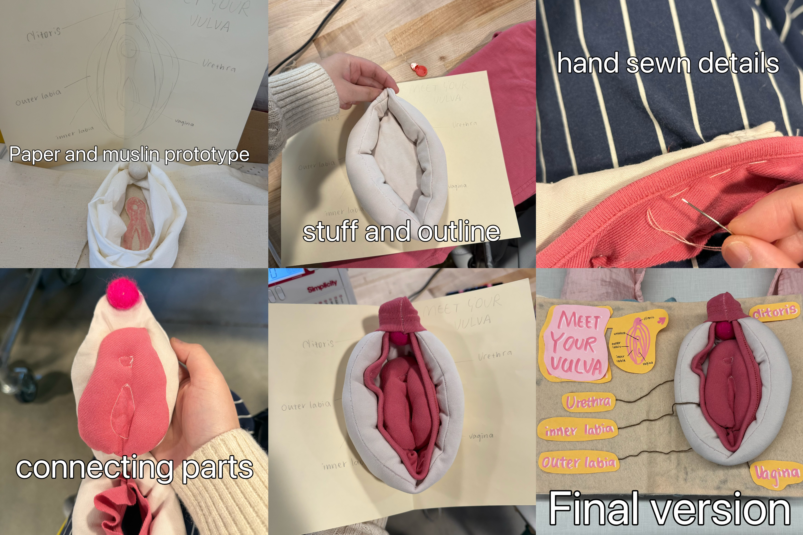
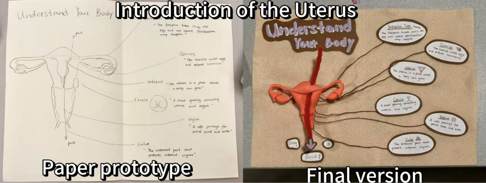
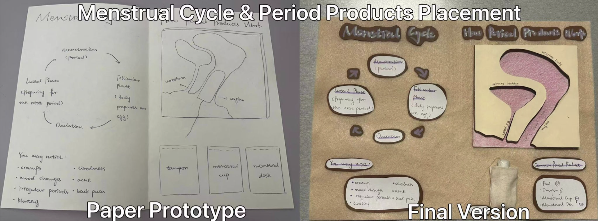

Final Project
Bloom
Bloom is an educational toolkit designed to help young girls feel informed, prepared, and unashamed about puberty and menstruation.
Project Concept
We used tactile prototypes to make puberty education feel approachable, understandable, and safe to explore.
Despite menstruation being a universal biological experience, many adolescents encounter their first period without adequate preparation, due to limited school sex education, cultural taboos, or simple lack of access to clear and friendly resources. Bloom addresses this gap through hands-on, tactile, and visual prototypes that make body literacy feel safe, approachable, and even joyful.
The centerpiece of Bloom is a soft fabric book whose pages introduce female anatomy, body changes during puberty, and practical period preparedness through illustrated textile panels, felt anatomical models, and interactive pockets.
Goals & Prototyping Approach
Our goal was to make puberty and menstruation education feel less abstract and less shameful by turning it into something young users can touch, open, label, move, and practice with. We chose fabric, felt, stuffing, 3D printing, laser cutting, and sewing because these methods let us test both the educational content and the physical interaction. Through the prototype, we wanted to learn whether a tactile book could make anatomy, period products, and first-period preparedness easier to understand, while still feeling warm, safe, and friendly.
Prototyping Techniques Inventory
- Early sketch for the book
- Paper handwritten version of the book with cover design
- Felt fabric version without insert
- Sewn cover, 2 low-fi versions
- Final felt fabric book with hand-sewn inserts, anatomy models and period preparedness kit, introduction, and tips
- Sewn plush anatomical models of vulva
- 3D printing uterus
- Laser cut vagina side view and tampon
- Sewn mechanical-book-style underwear with pad
Implementation
We first sketched and created a paper prototype together to determine the book's content and layout.
The first and last pages function as the introduction and closing guidance for the book. From there, each interactive page focuses on a different part of body literacy or period preparedness. The fidelity level of the final book is mid-to-high: the forms are representational rather than clinically precise, but the materials, stitching, labels, and interactive parts are finished enough to function as a real educational object.

Vulva Plush Page
A sewn plush vulva tested through touch, labels, and showcase feedback.

We started by sketching precise measurements on paper to work out proportions before cutting any fabric. The first prototype used muslin combined with paper tissue to separate two concerns: structure and aesthetics. Muslin is cheap and easy to manipulate, so it let us test sizing and layering without wasting the final fabric. From that draft, we identified issues with the labia shape and overall scale, then adjusted the pattern for the final version.
The finished plush uses a dusty pink ribbed fabric for the inner anatomy and a lighter canvas-like fabric for the outer labia base. Each anatomical part is individually sewn and stuffed. The page was then mounted into the full nonwoven fabric book, and labels with anatomical callouts were added as a final layer.
During the showcase, we observed how visitors interacted with the page: whether they touched it, how long they spent on it, whether they could read the labels, and what they said unprompted. We also paid attention to our own observations across iterations, comparing the muslin draft to the final version to assess whether the proportional and structural issues we had identified were actually resolved.
The page received strong engagement at the showcase. Visitors were drawn to touch the plush, and many commented that it made anatomy feel less intimidating than a textbook diagram. The label placement and handwritten style also helped the page feel warm rather than clinical. The main issue was stuffing: the plush naturally rounded out during stuffing, making it thicker than intended and adding bulk to the book. This makes the book less portable and affects how the page sits when closed. If we were to iterate further, we would research plush-making techniques more deliberately before starting, practice stuffing methods on smaller test pieces, and explore ways to create a flatter profile while keeping the layered structure. We would also consider making the label system more modular so the page could work as a standalone teaching tool outside of the book context.
Uterus Introduction Page
A 3D-printed uterus model tested through comprehension and interaction.

For the final version, the "Introduction of the Uterus" page uses a 3D-printed uterus model to illustrate its anatomy and functions. On the left side, the uterus model includes a red chenille stem that the user can drag downward to simulate menstrual bleeding.
On the right side, name tags and descriptions of each part of the uterus are connected using brown yarn. This allowed the page to combine a labeled anatomical diagram with a simple physical interaction.
For the introduction of the uterus page, our goal was to test whether users could correctly understand the structure and function of the uterus after interacting with the page. We also tested whether users could successfully discover and perform the interaction of dragging the chenille stem to simulate menstrual bleeding without additional explanation.
After user testing and critique, we identified a conceptual issue with our current design: the chenille stem passes through the upper part of the uterus, which does not accurately represent the location of the endometrium shedding.
If we improve this prototype, we would redesign the menstrual flow interaction by placing red fabric or plastic material inside the uterine cavity, allowing users to pull it out from the inside to more accurately simulate menstrual blood flow.
Menstrual Cycle & Period Products Page
A side-view anatomy model evaluated through product placement tasks.

The Menstrual Cycle & How Period Products Work page is meant to help users understand the menstrual cycle and how a tampon is placed in the body. The left side briefly shows the menstrual cycle and common period experiences.
The main part is the right side, where we used laser cutting to make a side-view anatomy model with labeling. We also made a small tampon prototype with tissue paper and thread. Users can take it from the sewn pocket and place it into the anatomy model to understand where a tampon sits in the body.
We also listed other period products, including pads, tampons, menstrual cups, and menstrual discs.
We tested whether users could understand how period products work with the body. We asked people to look at the labels, identify where the tampon should go, and place the tampon prototype into the model.
This helped us see that the laser-cut diagram made the anatomy clearer, and the removable tampon made the interaction easier to understand. If we improved it, we would add a small label like "Place tampon here" to make it more clear and make the tampon prototype with stronger material so it can be reused more.
Pad Placement Page
A sewn underwear model tested through unguided interaction.
The Pad Placement page is designed to help users learn how to place a pad in a practical and approachable way. Using machine sewing techniques, we created a fabric pad, a "Try Me" pocket, and a three-dimensional underwear model that opens at an angle to simulate a top-down view.
To better mimic the feel of a real pad, we added felt and stuffing inside the fabric pad to create a soft and slightly padded texture. We also hand-sewed a dashed pad outline onto the underwear model to provide a visual cue and guide correct placement. Users can take the pad from the pocket and place it onto the underwear model to practice correct placement.
For the pad placement page, we tested how users naturally interacted with the page without additional guidance. We observed whether users could identify the fabric pad, understand the purpose of the "Try Me" pocket, and determine where the pad should be placed on the underwear model. Most users were able to discover the intended interaction and complete the task successfully.
The interaction was generally easy to understand, and users were able to identify where the pad should be placed. However, we found that returning the fabric pad to the pocket could be slightly difficult. Because the pad used Velcro and the pocket was made from a felt fabric material, the Velcro would sometimes catch on the pocket when being put away.
The pocket was also sized very closely to the dimensions of the pad, leaving little room for adjustment. In future iterations, we would use a material that is less likely to catch on Velcro and increase the pocket size to make storage easier while still keeping the pad secure.
Book Structure
Testing how the fabric pages would support interactive objects.
Alongside the content pages, we also developed prototypes for the book structure and cover. We first created a small-scale book structure prototype to determine how the fabric pages would be assembled.
Initial testing showed that the fabric alone was too soft to support the interactive elements, so cardboard inserts were added between fabric layers to provide additional rigidity. After assembling the final pages, we found that the completed book was significantly thicker than expected, so additional support was added along the spine to help the book maintain its shape.
For the book structure, we tested whether users could comfortably open, close, and navigate the book. We observed whether the structure could support the interactive pages without deforming during use.
The cardboard reinforcement successfully supported the interactive pages and helped the book maintain its shape during use. Although the final book became thicker than expected, some users felt that the added thickness made the book feel more substantial and protective.
One challenge was that some thicker elements, such as the 3D-printed uterus and sewn components, were placed close together, creating slight instability in certain pages. In future iterations, we would consider the thickness distribution of each page earlier in the design process.
Cover
Keeping the Bloom theme while evaluating the closure interaction.
For the cover, we explored several flower-inspired designs that reflected the Bloom theme. Our initial concept was a fully enclosed flower-shaped cover with stuffed fabric petals.
After creating a sample, we found that the design required significant fabrication time and did not scale well to the thickness of the final book. We therefore simplified the design using felt petals and added Velcro fasteners, allowing the cover to close securely while maintaining the visual identity of the project.
For the cover, we tested whether users could comfortably open and close the book. We observed how users interacted with the Velcro fastening system and whether the cover helped the book feel complete.
The cover and fastening system worked well overall, though the Velcro required some force to open and close. Alternative fastening methods, such as magnetic closures, could provide a smoother interaction.
Evaluation Summary
How we evaluated whether Bloom satisfied the design goals.
Across the showcase and iteration process, we evaluated Bloom by connecting each design goal to a visible user behavior. We looked for whether visitors wanted to touch the materials, whether they could read and use the labels, whether they discovered the interactions without extra explanation, and whether each page helped them understand anatomy, menstrual cycles, product placement, and preparedness in a clear and approachable way.
Overall, the tactile book format worked well. The soft plush, movable pieces, labels, pockets, and physical placement tasks made the content feel less intimidating and more memorable than a static diagram. The main improvements would be reducing bulk, distributing thick elements more carefully, making some interaction cues clearer, and replacing fragile or sticky materials with more durable ones.
AI use
This website was built mostly through vibe coding, while we designed the overall visual style and wrote all of the project content first. We wrote the content for each section on a single page and also wrote instructions for each section as a starting point for implementation.
As we added content into the site, AI helped improve some of the writing while formatting it for the webpage and occasionally generated section titles. We can confirm that more than 95% of the content is still our original work.